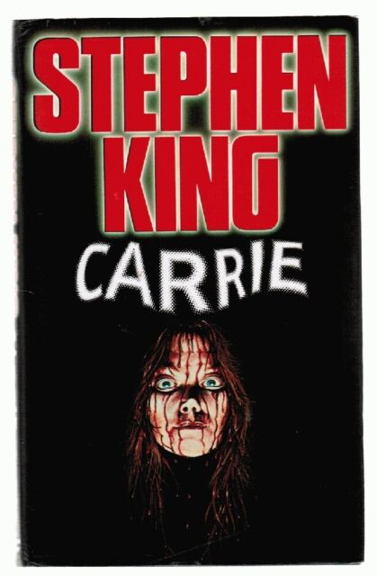

ALGUNOS DE SUS LIBROS:
Carrie:  The Shining: IT:

El Rey del Terror es uno de los autores más populares y prolíficos de la historia de la literatura. Sus obras se han adaptado a todos los medios posibles, hasta el punto de convertirse en un icono cultural del siglo XX, además de un auténtico gigante de las letras contemporáneas. King nació en el pequeño estado de Maine, en el que ha pasado la mayor parte de su vida y que se convertiría en el escenario favorito de sus obras.

En su adolescencia, durante los sesenta, comenzó a escribir relatos fantásticos y de terror que publicaba en fanzines y en el periódico del instituto. En 1970 se graduó en inglés en la Universidad de Maine. Para costear sus estudios, trabajó como conserje y en una lavandería industrial. En aquella época también conoció a su futura esposa, Tabitha, en la biblioteca de la universidad.
A partir de 1971, empezó a impartir clases de secundaria en el instituto de Hampden, otra localidad de Maine. Esa experiencia como docente inspiró su primera novela, Carrie. Es famosa la anécdota que tras concebirla como un cuento breve, desechó la historia y la tiró a la papelera. Tabitha encontró esas páginas, las leyó y lo convenció para continuarla. En 1973 Carrie fue adquirida por la editorial Doubleday. Tres años más tarde, sería llevada al cine por Brian de Palma.
Para aquel entonces, King ya era una estrella literaria en ciernes. En una veloz sucesión publicó alguna de las mejores obras de su extensa bibliografía como El misterio de Salems Lot (1975) en la que traslada el mito vampírico a una tranquila ciudad norteamericana; El Resplandor (1977) donde transforma sus problemas con el alcohol en una de sus ficciones más aterradoras, con una igualmente célebre adaptación al cine por Stanley Kubrick ; Apocalipsis (1978), en la que imagina a la humanidad diezmada por una pandemia; o La zona muerta (1978), en la que un hombre común adquiere poderes psíquicos y descubre que el futuro presidente de Estados Unidos es un psicópata que planea iniciar la tercera guerra mundial. Su empeño literario hasta la fecha ha sido, sin duda, La torre oscura, una combinación de fantasía épica y western, de Tolkien y Sergio Leone, inspirada en el poema del mismo título del autor victoriano Robert Browing. Está compuesta de nueve libros: El Pistolero (1982), La llegada de los tres (1987), Las tierras baldías (1991), Mago y cristal (1997), Los lobos de Calla (2003), La canción de Susannah (2004), La Torre Oscura (2004) y El viento por la cerradura (2012).
Además de obras de terror, King también ha hecho incursiones en la ciencia-ficción, como la novela de viajes en el tiempo 22/11/63 (2011), el suspense, con Mr. Mercedes (2012) o el cómic, con American Vampire, en colaboración con Scott Snyder. Con su amigo, el novelista de terror Peter Straub, ha coescrito dos novelas, El Talismán (1984) y La casa negra (2012). Con su hijo Owen King, publicó Bellas Durmientes , lanzada en 2017. Con su otro hijo, y también novelista, Joe Hill, ha trabajado en varios relatos cortos, de los que En la hierba alta (2019) también se convirtió en película. King ha recibido, entre otras muchas distinciones, los premios Bram Stoker, World Fantasy Awards y British Fantasy Society Awards. Se calcula que ha vendido más de 350 millones de libros en todo el mundo.
Stephen King habla sobre qué significa para él escribir y cómo se lleva a cabo ese acto. La respuesta a lo primero está en que la escritura le hace feliz, simplemente le llena y, a pesar de todo el dinero que ha ganado con sus libros, dice no haber escrito nunca por dinero. También en la entrevista habla de cosas más personales que le preguntan, como de su rutina diaria, o de sus autores favoritos personales.